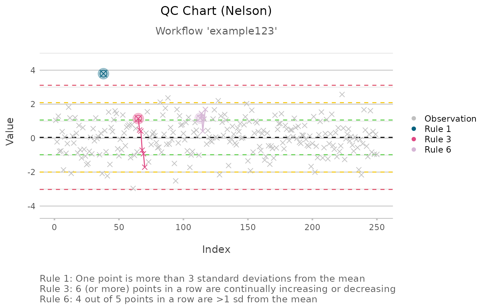

These rules are used for quality control (QC). Default values are set for Nelson's QC rules, but they also support Westgard, AIAG, Montgomery and Healthcare QC rules.
qc_rule1(x, m = mean(x), s = sd(x))
qc_rule2(x, m = mean(x), threshold = 9)
qc_rule3(x, threshold = 6)
qc_rule4(x, m = mean(x), threshold = 14, direction_mean = FALSE)
qc_rule5(x, m = mean(x), s = sd(x), threshold = 3)
qc_rule6(x, m = mean(x), s = sd(x), threshold = 5)
qc_rule7(x, m = mean(x), s = sd(x), threshold = 15)
qc_rule8(x, m = mean(x), s = sd(x), threshold = 8)
qc_rule_text(rule, threshold)
qc_test(x, m = mean(x), s = sd(x), guideline = "Nelson")Nelson LS. The Shewhart Control Chart—Tests for Special Causes. Journal of Quality Technology. Informa UK Limited; 1984 Oct;16(4):237–9. doi:10.1080/00224065.1984.11978921 .
vector with values
mean
standard deviation
minimal number of sequential values before rule is triggered (defaults to Nelson's)
a logical to indicate whether n observations in a row must be tested for alternating in direction of the mean
number of the rule
guideline of QC rules set, must be "Nelson", "Westgard", "AIAG", "Montgomery", or "Healthcare"
| Rule | Rule explanation: | Nelson | Westgard | AIAG | Montg. | HC |
| #1 | One point is more than 3 standard deviations from the mean | 1 | 1 | 1 | 1 | 1 |
| #2 | n (or more) points in a row are on the same side of the mean | 9 | 9 | 7 | 8 | 8 |
| #3 | n (or more) points in a row are continually incr. or decr. | 6 | - | 6 | 6 | 6 |
| #4 | n (or more) points in a row alternate in direction, incr. then decr. | 14 | - | 14 | 14 | - |
| #5 | n - 1 out of n points in a row are >2 sd from the mean | 3 | 3 | 3 | 3 | 3 |
| #6 | n - 1 out of n points in a row are >1 sd from the mean | 5 | 5 | 5 | 5 | - |
| #7 | >=n points in a row are within 1 sd of the mean | 15 | - | 15 | 15 | 15 |
| #8 | >=n points in a row outside 1 sd of the mean, in both directions | 8 | - | 8 | 8 | - |
Montg.: Montgomery, HC: Healthcare
x <- qc_test(rnorm(250))
x
#> Quality Control Rules according to Nelson
#> -----------------------------------------
#> n = 250
#> mean = -0.05550756
#> sd = 0.8935083
#> -----------------------------------------
#>
#> QC Rule 1: One point is more than 3 standard deviations from the mean
#> Violation on starting position:
#> [1] 144
#> Violation on starting value:
#> [1] -3.251519
#>
#> QC Rule 2: 9 (or more) points in a row are on the same side of the mean
#> No violations
#>
#> QC Rule 3: 6 (or more) points in a row are continually increasing or decreasing
#> Violation on starting position:
#> [1] 173
#> Violation on starting value:
#> [1] 0.189877
#>
#> QC Rule 4: 14 (or more) points in a row alternate in direction, increasing then decreasing
#> No violations
#>
#> QC Rule 5: 2 out of 3 points in a row are >2 sd from the mean
#> No violations
#>
#> QC Rule 6: 4 out of 5 points in a row are >1 sd from the mean
#> No violations
#>
#> QC Rule 7: >=15 points in a row are within 1 sd of the mean
#> Violation on starting positions:
#> [1] 19 20 21 22 23 24
#> Violation on starting values:
#> [1] -0.7064943 -0.6490957 -0.3819864 -0.8195048 0.6977046 0.6362804
#>
#> QC Rule 8: >=8 points in a row outside 1 sd of the mean, in both directions
#> No violations
# turn into data.frame, e.g. for export
head(as.data.frame(x))
#> index value rule_1 rule_2 rule_3 rule_4 rule_5 rule_6 rule_7 rule_8
#> 1 1 0.5114972 NA NA NA NA NA NA NA NA
#> 2 2 -0.6272352 NA NA NA NA NA NA NA NA
#> 3 3 1.0064877 NA NA NA NA NA NA NA NA
#> 4 4 -0.9250010 NA NA NA NA NA NA NA NA
#> 5 5 0.3048606 NA NA NA NA NA NA NA NA
#> 6 6 0.5402150 NA NA NA NA NA NA NA NA
if (require("certeplot2")) {
plot2(x,
subtitle = "Workflow 'example123'")
}
#> Loading required package: certeplot2
